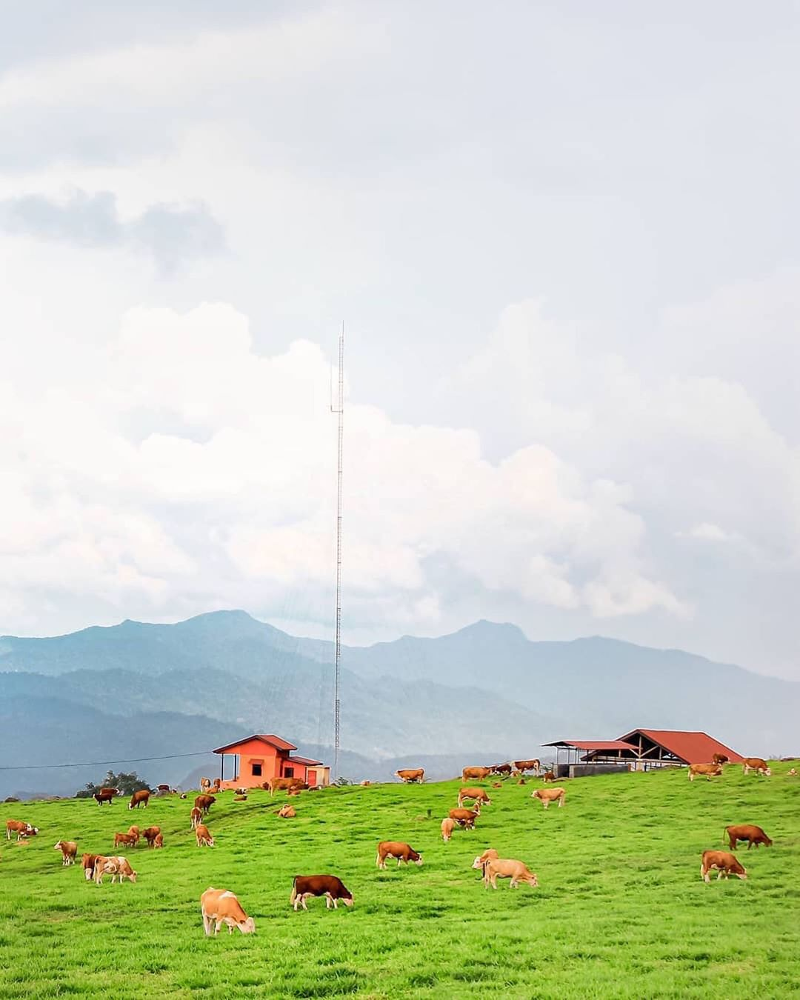
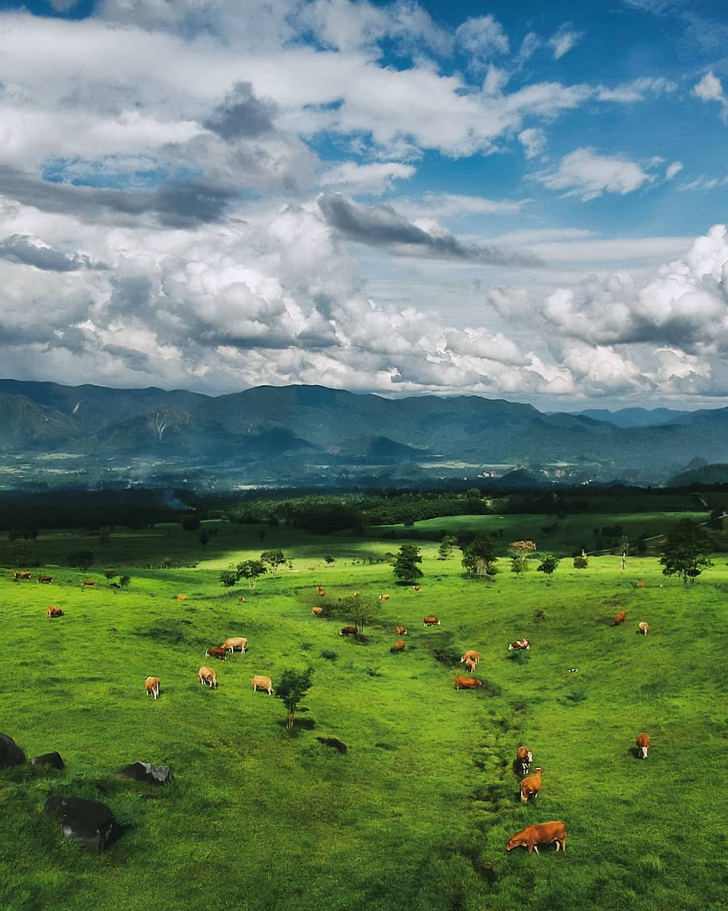
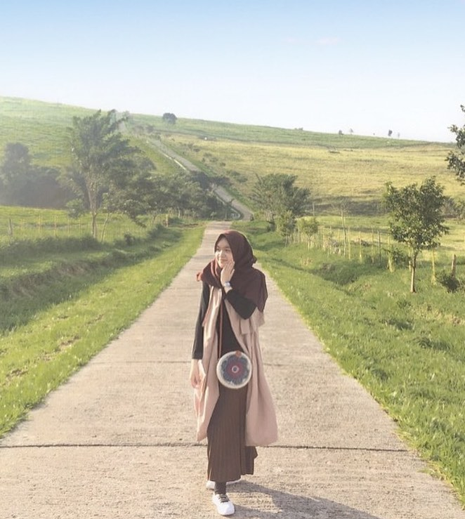

Padang Mangateh



 |
Jl. Padang Mengatas, Mungo, Luak, Kabupaten Lima Puluh Kota, Sumatera Barat | Ranu Manduro padang rumput dengan luas puluhan hektar, viral di media sosial, beberapa pekan terakhir. Pemandangan indah dengan background gunung penanggungan, menjadikan padang rumput yang dihiasi batu pada puluhan titik ini menarik ribuan orang untuk mendatangi lokasi itu. Kita dapat menikmati pemandangan indah tersebut dengan berjalan-jalan di padang rumput tersebut. Dan yang paling penting kita tidak perlu mengeluarkan uang untuk menikmati pemandangan indah ini. |
|---|